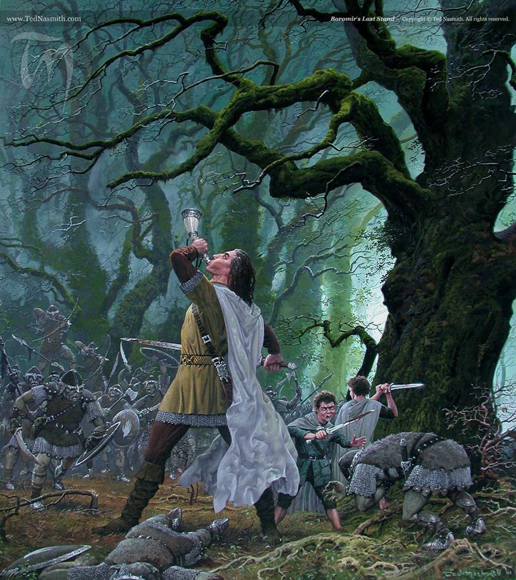
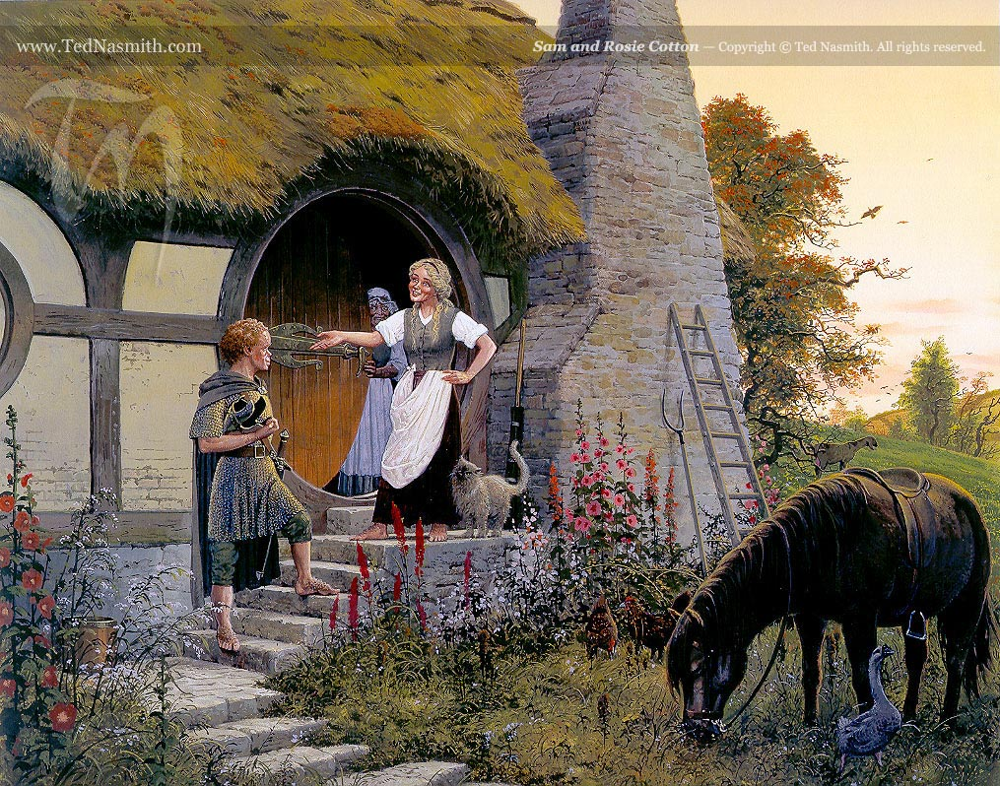
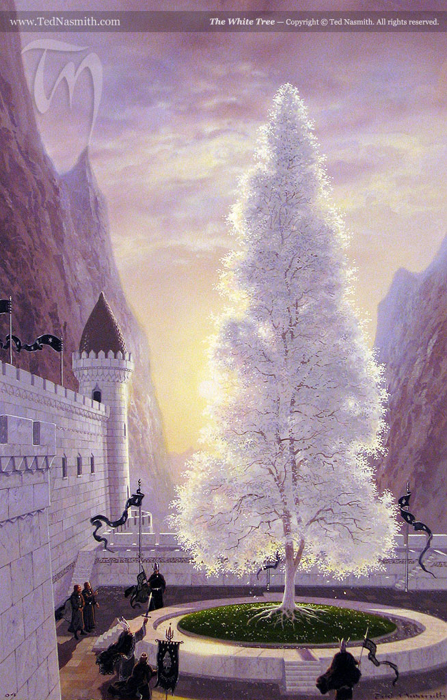

Noah Stachera, Jimin Kim and Min Wu
Lord of the Rings Text FileOur Mission
This project is based off of Tolkien's Legendarium series of books "The Lord of the Rings". The goal of this project was to experiment with Spacy's named entities with important people and places in the Lord of the Rings.
The Network page explains how these entities can be visualized on a broad scale from the books.
The Analysis page shows in more detail how these entities interact with Tolkien figures and assets using a table.
The Methods page shows our code and the process it took from Regex autotagging to the Network Visualization.
Illustrations

"Boromir's last Stand"
 "At the sign of the Prancing Pony"
"At the sign of the Prancing Pony"

"Sam and Rosie Cotton"

"The White Tree"